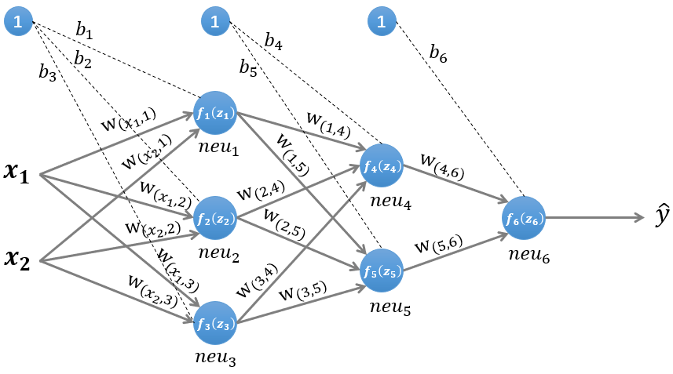

神经网络中的前向传播与后向传播
Jake G July 10, 2019 [神经网络] #BP算法
$ f(z) $为激励函数，关于激励函数(又称激活函数)的总结
隐藏层1输入
$$ z^{(1)}=W^{(1)}x^T+b^{(1)}\tag{1} $$
隐藏层1输出
$$ n^{(1)}=f^{(1)}(z^{(1)})\tag{2} $$
隐藏层2输入
$$ z^{(2)}=W^{(2)}n^{(1)}+b^{(2)}\tag{3} $$
隐藏层2输出
$$ n^{(2)}=f^{(2)}(z^{(2)})\tag{4} $$
隐藏层3输入
$$ z^{(3)}=W^{(3)}n^{(2)}+b^{(3)}\tag{5} $$
隐藏层3输出即输出层
$$ \widehat y = n^{(3)}= f^{(3)}(z{(3)})\tag{6} $$
损失函数
$$ L(y,\widehat y)\tag{7} $$
即隐藏层k+1输入
$$ z^{(k+1)}=W^{(k+1)}n^{(k)}+b^{(k+1)}\tag{8} $$
隐藏层k+1输出
$$ n^{(k+1)}= f^{(k+1)}(z{(k+1)})\tag{9} $$
对损失函数进行总结https://blog.csdn.net/lien0906/article/details/78429768
计算偏导数
$$ \frac {\partial z^{(k)}}{\partial b^{(k)}}= diag(1,1, \ldots ,1)\tag{10} $$
列向量对列向量求导参见矩阵中的求导
计算偏导数$\frac {\partial L(y,\widehat y)}{\partial z^{(k)}}$
偏导数$ \frac {\partial L(y,\widehat y)}{\partial z^{(k)}}\ $ 又称误差项(error term,也称"灵敏度"),一般用$ \delta $ 表示,用$ \delta^{(k)} $ 表示第k层神经元的误差项,其值的大小代表了第k层神经元对最终总误差的影响大小
$$ \begin{align} \delta^{(k)} & = \frac {\partial L(y,\widehat y)}{\partial z^{(k)}}\cr & =\frac {\partial n^{(k)}}{\partial z^{(k)}}* \frac {\partial z^{(k+1)}}{\partial n^{(k)}}* \frac {\partial L(y,\widehat y)}{\partial z^{(k+1)}}\cr & = {f^{(k)}}^{'}(z^{(k)}) * (W^{(k+1)})^T * \delta^{(k+1)} \end{align}\tag{11} $$
最终需要用的两个导数
$$ \frac {\partial L(y,\widehat y)}{\partial W^{(k)}} =\frac {\partial L(y,\widehat y)}{\partial z^{(k)}}* \frac {\partial z^{(k)}}{\partial W^{(k)}} =\delta^{(k)}*(n^{(k-1)})^T\tag{12} $$
$$ \frac {\partial L(y,\widehat y)}{\partial b^{(k)}} =\frac {\partial L(y,\widehat y)}{\partial z^{(k)}}* \frac {\partial z^{(k)}}{\partial b^{(k)}} =\delta^{(k)}\tag{13} $$
后向传播参数更新
$$ W^{(k)} = W^{(k)} - \alpha(\delta^{(k)}(n^{(k-1)})^T + W^{(k)})\tag{14} $$
$$ b^{(k)} = b^{(k)}-\alpha\delta^{(k)}\tag{15} $$ 其中$ \alpha $ 是学习率
后向传播中的正则化,L1正则化,L2正则化